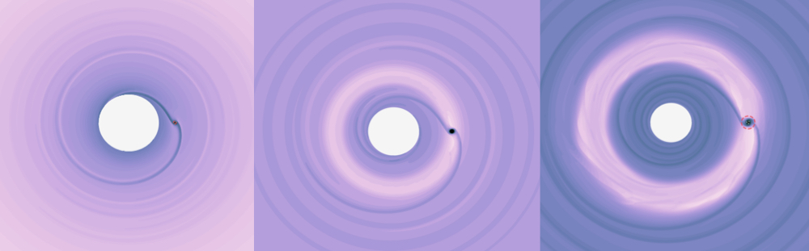
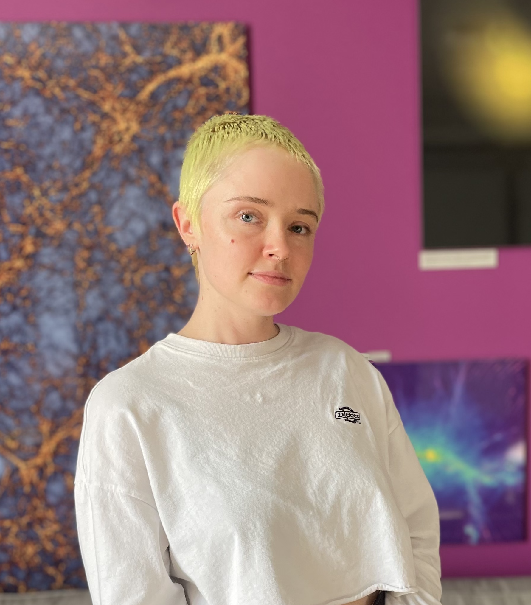

I am a theoretical astrophysicist currently working as an EMIT (Establishing Multimessenger Inclusive Training) Postdoctoral Fellow at Fisk University and Vanderbilt University in Nashville, Tennessee. Previously, I was a Tomalla Fellow at the Center for Theoretical Astrophysics and Cosmology in the Institute for Computational Science at the University of Zurich (UZH), Switzerland.
I use analyical calculations, numerical tools, and hydrodynamical simulation codes such as DISCO to address questions in black hole formation, binary evolution, and the role of astrophysical accretion disks.
Much of my work is motivated by ongoing gravitational wave experiments LIGO/Virgo/KAGRA, which are unveiling the lower-end of the mass spectrum of black holes via detections of binary mergers, as well as future missions such as LISA which will detect the interactions of compact binaries and supermassive black holes across the Universe. My research addresses what sources we will detect and how we can prepare to gain the most information from these detections. I am interested in the flow of gas around black holes, which we know is a critical process throughout the lifetime of supermassive black hole growth and for which a lot of puzzles remain to be answered. I received my PhD from Columbia University advised by Zoltán Haiman working on the interplay of accretion disks and coalescing supermassive black hole binaries.

(she/her)
email: aderdzinski (at) fisk.edu
NASA ADS Search
ORCiD
CV (pdf)